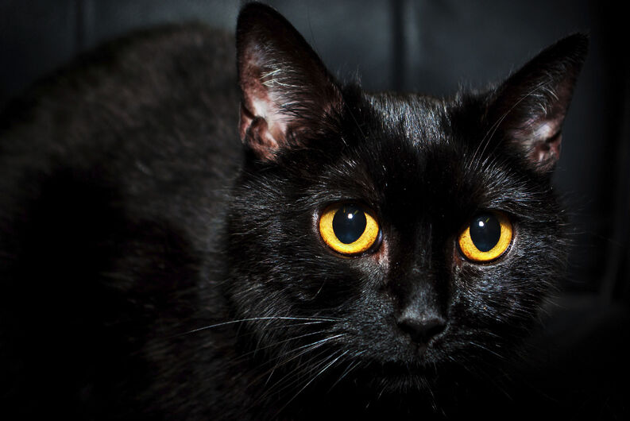

Gato de la mala suerte
No fue sino hasta la Edad Media, en Europa, que el status del gato negro cambió, pues comenzó a ser asociado con las brujas y la hechicería. La histeria colectiva contra las brujas y la práctica de magia negra se esparcía por Europa. De hecho, muchas ancianas solitarias que cuidaban y alimentaban gatos callejeros, a menudo fueron acusadas de brujería.
La creencia de que las brujas se transformaban en gatos negros para rondar las calles sin ser observadas se convirtió en una creencia masiva en Estados Unidos durante la caza de brujas de Salem. Incluso hoy en día la asociación entre gatos negros y brujas se mantiene vigente durante las celebraciones de Halloween, a pesar del origen de la celebración religiosa. Por todo esto, un animal antes venerado, se convirtió en un símbolo de malos presagios en algunos lugares del mundo.